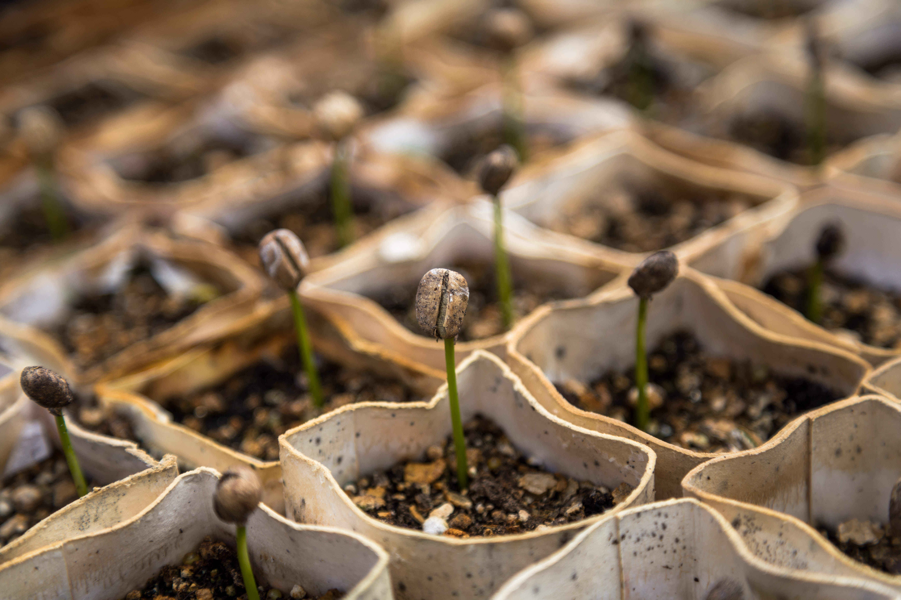

The esssential parts of the polyponic system.
A polyponic system is a system with many components working together to provide the best environmnet to grow in. To get the best performance start with the best water. Water is the life-blood of an hydroponic or aquaponic system. It is the medium through which all essential macro- and micronutrients are transported to the plants, and the medium through which the fish receive oxygen. The second component is the nutrient source for your plants. There are a organic

Polyponics Explained
Plants, worms and fish work codependantly to create delicious food. Water is cycled from a fishtank to the plants, where the worms are happily living in the soil, via tubing and waterpump. The plants get some of the vital nutrients they need naturally from fish feces. During this process the water goes through a natural filtration process by the plants roots. From there it passes through a secondary filter to guarentee fresh water for the fish. It is then collected back into the fish tank to start all over. Click the link below for exact specifications.